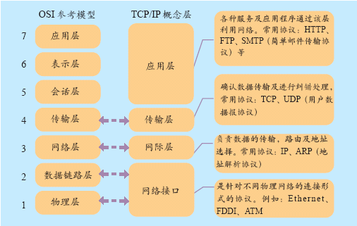

OSI，TCP/IP协议的体系结构
 每一层的协议如下： 物理层：RJ45、CLOCK、IEEE802.3 （中继器，集线器） 数据链路：PPP、FR、HDLC、VLAN、MAC （网桥，交换机） 网络层：IP、ICMP、ARP、RARP、OSPF、IPX、RIP、IGRP、 （路由器） 传输层：TCP、UDP、SPX 会话层：NFS、SQL、NETBIOS、RPC 表示层：JPEG、MPEG、ASII 应用层：FTP、DNS、Telnet、SMTP、HTTP、WWW、NFS 每一层的作用如下： 物理层：通过媒介传输比特,确定机械及电气规范（比特Bit） 数据链路层：将比特组装成帧和点到点的传递（帧Frame） 网络层：负责数据包从源到宿的传递和网际互连（包PackeT） 传输层：提供端到端的可靠报文传递和错误恢复（段Segment） 会话层：建立、管理和终止会话（会话协议数据单元SPDU） 表示层：对数据进行翻译、加密和压缩（表示协议数据单元PPDU） 应用层：允许访问OSI环境的手段（应用协议数据单元APDU）
IP地址的分类
IP地址构成：网络号 + 主机号 A类地址：网络地址(1Byte) + 主机地址(3Byte)，且网络地址的首位必须是0；则网络地址的取值范围是0~~127, 而0是保留的并且表示所有IP地址，而127也是保留的地址，并且是用于测试环回用的。因此A类地址的范围其实是从1-126之间。 可用的A类网络有126个，每个网络能容纳1亿多个主机(2的24次方减1的主机数目)。 子网掩码：255.0.0.0. A类IP范围：首位为0；1.0.0.1~~126.255.255.254；主机号24位 B类地址：网络地址(2Byte) + 主机地址(2Byte)，且网络地址的前两位是10；则网络地址的取值范围是128~~191, 可用的B类网络有2的14方个，每个网络能容纳6万多个主机 (2的16次方减0和广播地址)。 子网掩码：255.255.0.0 B类IP范围：前两位为10 ；128.0.0.1~~191.255.255.254；主机号16位 C类地址：网络地址(3Byte) + 主机地址(1Byte)，且网络地址的前三位是110；则网络地址的取值范围是192~~223, 可用的C类网络有2的21次方，可达209万余个，每个网络能容纳254个主机。 子网掩码：255.255.255.0 C类IP范围：前三位为110；192.0.0.1~~223.255.255.254；主机号8位 D类地址：此类地址称为多播地址，也叫做组播地址，前四位必须是1110；网络地址的取值范围是224~~239, D类IP范围：前四位为1110；224.0.0.1~~239.255.255.254 E类地址：此类地址是保留地址，留作将来使用，前五位必须是11110；网络地址的取值范围是240~~254, E类IP范围：前五位为11110；240.0.0.1~~254.255.255.254 在这么多网络IP中，国际规定有一部分IP地址是用于我们的局域网使用，也就是属于私网IP，不在公网中使用的，他们的范围是： 10.0.0.0～10.255.255.255 172.16.0.0～172.31.255.255 192.168.0.0～192.168.255.255
ARP和RARP协议
ARP 1：首先，每个主机都会在自己的ARP缓冲区中建立一个ARP列表，以表示IP地址和MAC地址之间的对应关系。 2：当源主机要发送数据时，首先检查ARP列表中是否有对应IP地址的目的主机的MAC地址，如果有，则直接发送数据，如果没有 ，就向本网段的所有主机发送ARP数据包，该数据包包括的内容有：源主机 IP地址，源主机MAC地址，目的主机的IP 地址。 3：当本网络的所有主机收到该ARP数据包时，首先检查数据包中的IP地址是否是自己的IP地址，如果不是，则忽略该数据包，如果是， 则首先从数据包中取出源主机的IP和MAC地址写入到ARP列表中，如果已经存在，则覆盖，然后将自己的MAC地址写入ARP响应包中， 告诉源主机自己是它想要找的MAC地址。 4：源主机收到ARP响应包后。将目的主机的IP和MAC地址写入ARP列表，并利用此信息发送数据。如果源主机一直没有收到ARP响应数据包， 表示ARP查询失败。 广播发送ARP请求，单播发送ARP响应。 RARP RARP是逆地址解析协议，作用是完成硬件地址到IP地址的映射，主要用于无盘工作站，因为给无盘工作站配置的IP地址不能保存。工作流程： 在网络中配置一台RARP服务器，里面保存着IP地址和MAC地址的映射关系，当无盘工作站启动后，就封装一个RARP数据包，里面有其MAC地址， 然后广播到网络上去，当服务器收到请求包后，就查找对应的MAC地址的IP地址装入响应报文中发回给请求者。因为需要广播请求报文， 因此RARP只能用于具有广播能力的网络。